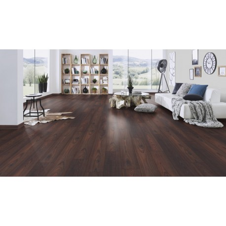

Ekologiškas laminatas: grindų danga ELESGO, FALQUON - Naturfloor.lt
 Grindų katalogas Idėjos Naudinga informacija Kontaktai CloseNaturFloor grindų danga
Pasirinkite grindų rūšį RinktisEkologiškas laminatas.
RinktisKlasikinis laminatas
CloseIdėjos
RinktisInterjero idėjos
Rinktis
Kolekcijų galerija
Close
+37067034557
Grindų katalogas Idėjos Naudinga informacija Kontaktai Prisijungti Registruotis Krepšelis tuščias!Ekologiškas laminatas.
Pradžia Ekologiškas laminatas Paplitusi eko banga skatina susimąstyti apie aplinką, kurioje gyvename. Namai viena tų vietų, kur praleidžiame daugiausia laiko, o grindų danga – vieta su kuria turime daugiausia kontakto. Todėl labai svarbu, kad ji būtų ne tik stilinga ir papildytų bendrą namų interjerą, bet kartu būtų praktiška bei sveika naudoti.
Siekiant kokybiškesnės gyvenamosios aplinkos tinkamiausia pasirinkti NatureFloor ekologišką laminatą.
NatureFloor platinamas Vokietijos gamintojų laminatas Elesgo bei FALQUON . Tai vienintelis pasaulyje ekologiškas laminatas gaminamas pagal specialią technologiją iš aukštos kokybės žaliavų, kuriose nėra toksinų, cheminių medžiagų ar tirpiklių. Šios natūralios grindys tokios pat stiprios ir patvarios kaip ir kiti laminatai, nes paviršius yra pagamintas iš akrilo su natūraliu mineralu korundu ir sutvirtintas elektronų pluoštu (EBC system). Natūralus laminatas yra ilgaamžis - itin atsparus subraižymams, smūgiams bei nebijantis drėgmės. Be to, tai tinkamas laminatas šildomoms grindims.
Ekologiško laminato nauda:
—Natūralios grindys itin tinkamos vaikams bei alergiškiems žmonėms. Jos pagamintos tik iš natūralių medžiagų, todėl sumažinama galimų ligų tikimybę. Antistatinės bei antibakterinės grindų dangos savybės netraukia dulkių bei purvo, taip palengvindamos alergijų simptomus. Tai puikus pakaitalas natūralaus medžio grindims, nes yra toks pat sveikas, tačiau jį prižiūrėti lengviau, o kaina – prieinamesnė. Dulkės nesikaupia ant šio laminato, o purvas gali būti lengvai nuvalomas drėgna šluoste;
—Natūralios grindys taip pat gali būti stilingos. Naujųjų technologijų dėka, laminato asortimentas labai platus, pasižymi tiek spalvų, tiek raštų įvairove ir gali priminti tikrą natūralią medieną. Todėl kiekvienas išsirinks tinkamą savo namų interjerui. Be to, click sistema naudojama laminate (jo tvirtinimui nereikia naudoti klijų) užtikrina greitą bei patogų grindų montavimą bei išmontavimą, jis gali būti perkeliamas į kitą vietą;
—Natūralus laminatas ilgiau išlaiko šilumą, ko negalima pasakyti apie paprastą klasikinį laminatą. Jis, kaip ir natūrali mediena, įkaista nuo saulės šviesos ar kambario temperatūros, o gamyboje naudojamos žaliavos bei specialios technologijos užveria poras, per kurias šiluma nebegali išeiti;
—Ekologiškas laminatas tinkamas bet kokios paskirties patalpose, nes yra ne tik patvarus, bet ir atsparus vandeniui. Elektronų spinduliai naudojami laminato gamyboje užveria poras, todėl sukuriama drėgmės izoliacija. Dėl to galima montuoti šią grindų dangą virtuvėje ar net vonios kambaryje, be baimės, kad vanduo prasisunks ir laminatas ,,išsipūs’’;
—Priešingai nei kitų tipų grindų dangos, ekologiškas laminatas negirgžda ir veikia kaip grindų garso izoliacija.
Ekologiškas laminatas – tai lyg natūralios medienos grindų pakaitalas, kuris toks pat stilingas, jaukus ir sveikas aplinkai, bet kartu ir lengviau prižiūrimas, atsparesnis pažeidimams, o kaina žemesnė. Tai puikus pasirinkimas ieškantiems kokybės ir kainos santykio!
Jei kyla klausimų ar ieškote patarimo, visada galite nemokamai pasikonsultuoti su specialistais internetu ar atvykę į ,,Domavita’’ parduotuves.
Užsisakius prekes internetu, pristatymas vykdomas ,,iki durų’’ visoje Lietuvoje , tiek didžiuosiuose miestuose (Vilnius, Kaunas, Klaipėda, Šiauliai, Panevėžys, Alytus, Tauragė, Marijampolė, Utena, Jonava), tiek mažuose miesteliuose ar kaimuose. Taip pat, prekes galima atsiimti ,,Domavita’’ parduotuvėse Vilniuje ir Alytuje.
Jei turite klausimų kreipkitės: kontaktai
RinktisELESGO® laminuotos grindys.
RinktisFALQUON grindys
RinktisVINILINĖS SU NATŪRALIAIS MINERALAIS GRINDYS
Kuo ekologiškos laminuotos grindys skiriasi nuo klasikinių laminuotų grindų:
* šiltos kaip natūrali mediena;
* be melamino, be tirpiklių, be formaldehido ( HDF plokštė pagaminta be jokių kenksmingų medžiagų, atitinka E1 emisijos klasę, tačiau pagal Blue Angel standartus sunkiai randamas net leistinas formaldehido kiekis, kuris praktiškai beveik neįrodomas );
* antistatinis, antibakterinis paviršius, netraukia dulkių bei purvo;
* paviršius nepraleidžia drėgmės ( elektrono spinduliais sutvirtintas paviršius yra "užvertomis" poromis, todėl visiškai nepraleidžia vandens );
* su specialia drėgmės izoliacija;
* tylios, neturi girgždėjimo;
* atsparios smūgiams bei įbrėžimams, trinčiai ( klasikinis laminatas padengtas melaminu, todėl minkštesnis ir šaltesnis );
* su natūraliu mineralu korundu;
* UV apsauga spalvos išblukimui;
* tinka šildomoms grindims nesukeldamos pavojaus sveikatai ( dėl elektrono spindulių EBS sistemos paviršiaus poros yra "užvertos" ir nepraleidžia net ir minimalaus, kiek yra natūralioje medienoje, formaldehido kiekio );
* lengvai valomos drėgna šluoste;
* UNILIN užraktai užtikrina lengvą, greitą bei tvirtą montavimą;
* ypatingai tinka vaikams bei alergiškiems žmonėms ( Vokietijos gydytojų rekomendacija );
* kasmet vykdomas medicininis patikrinimas.
Nesate tikri, kokias grindis pasirinkti? Parašykite mums!
Nemokama konsultacijaNaujienlaiškis
0Apie NaturFloor
Ekologiška ir išskirtinė laminuota grindų danga iš Vokietijos gamyklų, taikančių modernią elektrono spindulių technologiją ( EBS - electronic beam system ), kurios dėka laminuotos grindys yra šiltos kaip natūrali mediena, be toksinių medžiagų - formaldehido, melamino. Sveikas pasirinkimas ir originalus dizainas Jūsų namams.